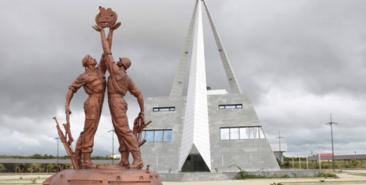

Capital
Mavinga

Mavinga
109.346 km²
Nganguela / Português
O Cuando é uma província recente de Angola, resultante da divisão do antigo Cuando Cubango. Destaca-se pelas suas vastas paisagens naturais, baixa densidade populacional e grande riqueza ecológica.